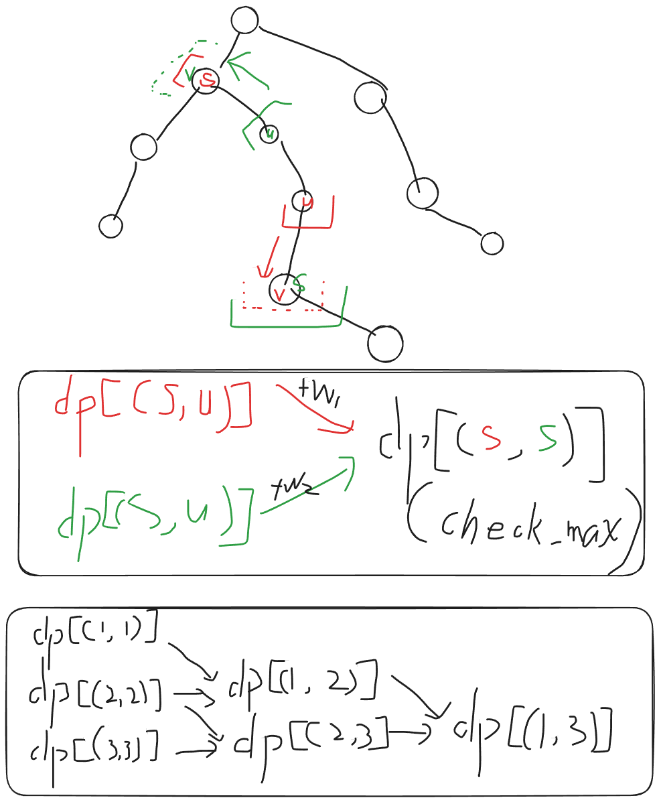

2026“钉耙编程”中国大学生算法设计暑期联赛（08）
1008 分数越小还是越大越好【树上区间 DP / DP 建图】
Problem Description
给定一棵包含 个顶点的树，顶点编号为 。
你需要选择一个 到 的排列 ，并将 作为顶点 的标签。
对于一个整数集合 ，定义 为没有出现在 中的最小非负整数。
对于两个顶点 ，设它们之间简单路径上的顶点集合为 ，定义
树的分数定义为
求所有标签排列中，树的最小可能分数和最大可能分数。
Input
第一行输入一个整数 ，表示测试数据组数。
每组测试数据的格式如下：
第一行输入一个整数 ，表示树的顶点数。
接下来 行，每行输入两个整数 ，表示树中存在一条连接顶点 和顶点 的无向边。
Output
对于每组测试数据输出一行两个整数，分别表示树的最小可能分数和最大可能分数。
Sample Input
3
3
1 2
2 3
4
1 2
1 3
1 4
5
1 2
1 3
1 4
1 5Sample Output
5 7
5 11
6 16Hint
对于一组测试数据：
- ；
- ；
- 输入保证给出的边构成一棵树。
OJ 中只有一个正式测试点，该测试点满足：
- ；
- 。
Solution
赛事没有根据 n 的 1e3 数量级思考转移过程，过于贪心
维护的其实是一条链向两侧延伸的 树上 区间 DP
- 自认为比较正向思维的算法
- 从 DP 的本质出发，尝试创建一个 DP 转移 DAG 图，并在转移边上面预设转移参数
- 为了方便做转移，我们考虑将所有的状态编号
id(u, v)收集起来，用我们熟悉的dfs快速创建同一端点的 区间 转移边

- 其实我的实现麻烦了
- 由于 是 1e3 的数量级
- 所以我们可以随意的以任意一个节点为根遍历一遍，为所欲为
- 所以不妨以每一个节点为根，都搞一次信息：
sz[root][u], fa[root][u]，这样更方便思考 - 不难发现，一旦这样以后，就可以快速直到
dp[u][v]的前驱状态是什么了，因为发散难，而溯源容易，直接以一个u为根节点，然后v跳fa[u][v]即可
Code
#include<bits/stdc++.h>
using namespace std;
using ll = long long;
const int N = 2005;
int n;
// 树
vector<int> e[N];
int sz[N];
// DP 图
vector<pair<int,ll>> E[N*N];
int deg[N*N];
ll dp[N*N];
inline int id(int i,int j) {
if(i > j) swap(i, j);
return (i-1)*n + j;
}
void get_size(int u,int f) {
sz[u] = 1;
for(auto v:e[u]) if (v!=f) {
get_size(v, u);
sz[u] += sz[v];
}
}
void dfs(int u,int f,int s, ll k1) {
E[id(s, f)].push_back({id(s, u), k1 * sz[u]});
deg[id(s, u)]++;
for(auto v: e[u]) if (v!=f) dfs(v, u, s, k1);
}
void solve() {
ll mn = 2e18;
ll mx = 0;
cin >> n;
for (int i = 1; i < n;i ++) {
int u, v;
cin >> u >> v;
e[u].push_back(v);
e[v].push_back(u);
}
// min
bool ok = true;
for (int i = 1; i <= n; i++) ok &= e[i].size() <= 2;
mn = ok ? (2*n-1) : (n + 1);
// max
// 建立 DP 拓扑图
fill(dp, dp+1+n*n, 0);
// 从每一个节点开始，形成一个 区间 DP 转移链
// 我愿称之为 增量 DP ???
for(int u = 1; u <= n; u++) {
get_size(u, 0);
// 初始仅存储 0 的贡献
// 容斥 = 所有的去重匹配方案数量 - 子树内部匹配数量 = 经过 u 的数量
ll sum = n + n * (n - 1) / 2;
for (auto v:e[u]) sum -= sz[v] + sz[v] * (sz[v] - 1) / 2 ;
dp[id(u, u)] = sum;
// 确定转移边的权值
for(auto v:e[u]) dfs(v, u, u, n - sz[v]);
}
// 严格按照拓扑序区间 DP
queue<int> Q;
for(int i = 1; i <= n * n; i++) if (!deg[i]) Q.push(i);
while(Q.size()) {
int u = Q.front(); Q.pop();
mx = max(mx, dp[u]);
// cout << u << " " << dp[u] << "\n";
for (auto [v, w]:E[u]) {
dp[v] = max(dp[v], dp[u] + w);
if(!--deg[v]) Q.push(v);
}
}
cout << mn << " " << mx << "\n";
for (int i = 1; i <= n; i++) e[i].clear();
for (int i = 1; i <= n * n; i++) E[i].clear(), deg[i] = 0;
}
int main() {
ios::sync_with_stdio(0); cin.tie(0); cout.tie(0);
int T = 1;
cin >> T;
while (T--) solve();
}